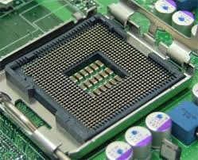
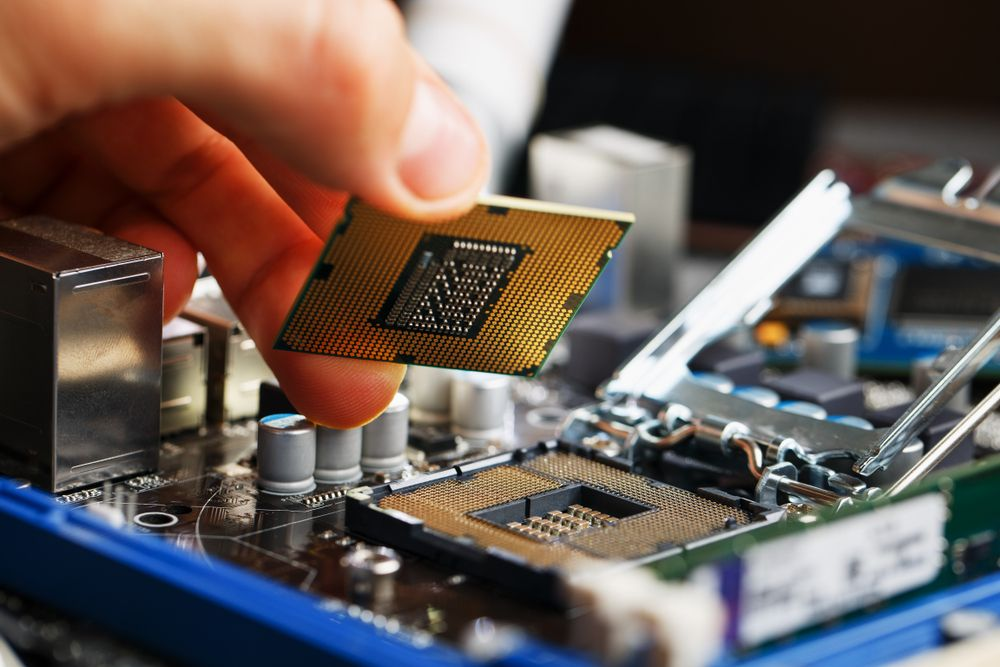

Aula 04 - O Processador
Componente principal do computador, o processador ou UCP (Central Process Unity) que em português seria traduzido para Unidade Central de Processamento é o componente mais importante do computador também sendo chamado de "o cérebro do computador". Segundo TORRES (2013), se o computador fosse um carro, o processador seria o motor.
/i.s3.glbimg.com/v1/AUTH_08fbf48bc0524877943fe86e43087e7a/internal_photos/bs/2021/V/o/VRLU2iTgAJXPsvZhh3bQ/2015-10-07-processador-da-intel-alcancou-altissima-velocidade.png)
Como podemos ver na imagem acima o processador é uma peça quadrada com pinos ou contatos em sua prte inferior. O processador é instalado diretamente na placa-mãe e necessita de um sistema de refrigeração instalado acima dele, também é necessário colocar um pouco de pasta térmica durante sua instalação, porém algumas placas já trazem o processador soldado diretamenta à sua estrutura.
Os processadores mais comuns atualmente são AMD e Intel com vários modelos diferentes.



A "difícil" tafefa de escolher um processador para seu PC
Escolher um processador é quase como escolher um carro (rsrsrs). É uma tarefa quase tão complicada quanto discutir política ou futebol no Brasil. Muitos são fãns de marca A ou B e discutirão de maneira ferrênea para defender seu preferido. Mas vamos tentar falar dos processadores sem puxar sardinha para nenhum deles.
Primeiramente precisamos saber quais tarefas você irá desenvolver com seu computador e qual o orçamento será utilizado para isto.
De uma maneira bastante simplória, poderíamos fazer a seguinte recomendação:
- Processadores de entrada: são voltados a usuários que não precisem de muito poder de processamento. Por exemplo, navegação da internet, acesso a e-mails e uso de pacote de escritório. Exemplos de processadores nesta categoria incluem o Celerom, Pentium (renomeado a partir de 2024 para simplesmente "Intel Processor") e Core i3/Core 3, no lado da Intel, e os processadores Athlon, série A e Ryzen 3, no lado da AMD.
- Processadores intermediários: voltados a usuários que requerem mais poder de processamento, para jogos e edição de imagens, por exemplo. Exemplos de processadores nesta categoria incluem o Ryzen 5, da AMD, e o Core i5/Core 5, da intel.
- Processadores topo de linha: voltados a usuários profissionais em áreas como edição de vídeo o renderização de imagens tridimensionais. Mesmo a jogadores sérios é recomendado processadores intermediários. Exemplos: Ryzen 7 e Ryzen 9, da AMD, e Core i7/Core 7, core i9/Core 9 e Xeon família E, da Intel, embora este último seja originalmente voltado a servidores e estações de trabalho de entrada.
- Processadores topo de linha superiores: voltados a usuários profissionais que requerem ainda mais poder de processamento. Este seguimento é também conhecido como HEDT (High-End DeskTop) Uma das características deferenciadas desses processadores é o acesso à memória RAM em quatro canais. Exemplos: Ryzen Threadripper, da AMD, e o Core i9 série X, da Intel, sendo que já existiram modelos do Core i7 neste seguimento.
- Processadores para estações de trabalho de alto desempenho: para desempenho ainda maior em aplicações profissionais com modelagem 3D, renderização e simulações científicas. Os processadores Ryzen Threadripper PRO da AMD, que suportam oito canais de memória e os modelos Xeon da família W da Intel que também aceitam oito canais são exemplos neste seguimento.
- Processadores para servidores: nesta categoria estão atualmente os processadores EPYC, da AMD, E Xeon, da Intel. Como ocorre com os computadores de mesa, o mercado de servidores é dividido em diversas categorias. Embora originalmente voltados a servidores e estações de trabalho, utilizam o mesmo soquete voltado a computadores de mesa e, com isto, muitos usuários têm utilizado processadores desta categoria na montagem de computadores de mesa de alto desempenho.
Um pouco da história dos processadores
Como pudemos observar nas aulas anteriores o microprocessador não esteve presente no início da computação. Falaremos aqui em ordem cronológica sobre os principais processadores do início da computação.
Intel 4004 (1971): O primeiro microprocessador comercial, com 4 bit e capacidade limitada.
Intel 8086 (1978): Introduziu a arquitetura x86, que se tornou o padrão para PCs.
Avanços significativos
Processadores multi-core: A intodução de múltiplos núcleos dentro de uma única CPU permite o processamento paralelo, aumentando a eficiência e o desempenho.
Tecnologia de 64 bits: Permite maior capacidade de memória e processamento mais eficiente em comparação com processsadores de 32 bits.
Características Técnicas
Núcleo de Processamento
A maioria dos processadores existentes hoje no mercado possui mais de um núcleo de processamento, isto é, internamente, eles têm mais de um processador. Em inglês, núcleo se chama core, desta forma processadores com dois, quatro, seis e oito núcleos são chamados dual core, quad-core, six-core e eight-core. Pode-se aproveitar o potencial oferecido por processadores com muitos núcleos rodando programas que reconheçam e usem estes núcleos adicionais. São exemplos destes programas os que trabalham com renderizaçao de imagens tridimensionais, ediçao de vídeo e alguns jogos.
Para as tarefas bem básicas do computador como navegaçao da Internet e uso de ferramentas de escritório, é um exagero utilizar um processador com muitos núcleos pois este trabalho poderá ser bem realizado utilizando-se apenas um núcleo. Neste caso, a utilização de diversos núcleos deixará os núcleos adicionais ociosos.
Para se trabalhar profissionalmente com edição de vídeo, áudio e renderização de modelos tridimensionais é importnate utilizar um processador com o maior número de núcleos e obviamente selecionar um processador que tenha a tecnologia Hyper-Threading (Intel) ou Simultaneos Multhreading (SMT, AMD).
Em resumo, nem sempre você precisa de um processador com muitos núcleos ou do modelo mais caro do mercado. O ideal é pensar não só no custo-benefício, mas também no seu orçamento e, principalmente, no que você realmente vai fazer com o computador. Clique no link a seguir e saiba mais: https://www.youtube.com/watch?v=BFEwkwhNcNY&t=4s
Alguns processadores possuem estas recnologias que simulam dois processadores pornúcleo de processamento. Assim, um processador com quatro núcleos de processsamento e que tenha uma destas tecnologias é reconhecido como tendo oito núcleos pelo sistema opeacional e programas. Importante notar que esses processadores adicionais "simulados" não têm o mesmo desempenho de núcleos de processadores "reais".
Soquete
O soquete é o tipo de conexão física que o processador possui com a palca-mãe. Esta caracterísitca é muito importante para que está montando um computador.
Os soquetes que estão atualmente disponíveis para computadores Desktop são:
Para processadores AMD:
-
Soquete AM4: usado por processadores AMD que suprotam dois canais de memória DDR4. - Soquete AM5: usado por processadores AMD que suportam dois canais de memória DDR5.
- Soquete sTR4: usado pelos processaores Ryzen Threadripper séries 1000 e 2000, que suportam quatro canais de memória DDR4.
- Soquete sTRX4: usado pelos processadores Ryzen Threadripper série 3000, que suportam quatro canais de memória DDR4. Apesar de ser fisicamente idêntico ao soque sTR4, processaores voltados ao soquete sTR4 não funcionam no soquet sTRX4 e vice-versa.
- Soquete sTR5: usado pelos processadores Ryzen Threadripper séries 7000 e 9000, que suprotam quatro canais memória DDR6, e pelos processadores Ryzen Threadripper PRO séries 7000 e 9000, compatíveis com até oi canais de memória DDR5 (a placa mãe, no entanto, pode apresentar conexão para apenas quatro canais de memória.)
- Soquete sWRW8: usado pelos processadores Ryzen Threadripper PRO séries 3000 e 5000, suportando oito canais de memória DDR4.
Para processadores Intel:
- Soquete LGA1151: usado pelos processadores Core i de sexta, sétima, oitava e nona geração (docinomes Sylake, Kaby Lake e Coffe lake) e modelos dos processaores Celeron, Pentium e Xeon família E derivados destas gerações.
- Soquete LGA1200: usado pelos processadores Core i de 10ª e 11ª geração, codinomes Comet Lake e Rocket Lake. Há processadores Celeron, Pentium e Xeon famílias E e W que também podem ser encontrados para esse soquete. Processaores baseados nesse soquete suportam dois canais de memória.
- Soquete LGA1700: utilizado pelos processadores Core i de 12ª, 13ª e 14ª geração, codinomes Comet Lake e Rocket Lake. Há processadores Celeron, Pentium e Xeon famílias E e W que também podem ser encontrados para esse soquete. Processadores baseados nesse soquete suportam dois canais de memória.
- Soquete LGA1851: utilizado pelos processadores Core Ultra série 2, codinome Arrow Lake. Não foram lanácos processadores Core série 1 para computadores de mesa.
- Soquete LGA2066: usado pelos processadores Core i7 e Core i9 de sexta, sétima e décima geração séria X, codinomes Skylake-X, Kaby Lake-X e Cascade Lake-X, além de modelos do Xeon família W. Tais processadores apresentam controlador de memória de quatro canais.
Clock interno:
Também conhecido simplesmente como clock, é o número de ciclos por segundo (frquência) de um sinal de sincronismo usado dento do processador, atualmente medido na casa dos GHz (gigahertz).
Overclock dinâmico:
Alguns processadores, tanto da AMD quanto da Intel, podem aumentar seus clocks automaticamente acima do clock padrão quando o processador "sente" que o usuário está pedindo maior poder de processamento. Esta característica é chamada Core Performance Boost (CPB) ou (Turbo Core, em processadores mais antigos), no lado da AMD, e Turbo Boost, no lado da Intel. Processadores dotados desta tecnologia são divulgados com dois clocks, um clock máximo e um clok padrão, que é usado na maior parte do tempo.
Clock base:
O clock interdo do processador é obtido multiplicando-se um clock base de menor frquência.
Memória cache:
É uma memória ultrarrápida localizada dentro do processador e pode ser dividia em três níveis: L1, L2 e L3 (nem todos os processadores possuem memória cache L3). Quanto mais memória cache o processador tiver, mais rápido ele será - pelo menos, em teoria.
Escolhendo um processador
Como a maioria dos processadores atuais já vem com Controlador de Vídeo integrado se você estiver montando um computador que não será usado para rodar jogos ou edição de imagens e vídoes poderá usar um dos mais comuns que estão no mercado. Ter o Controlador de Vídeo Integrado significa que o processador é responsável por gerar as informaçãooes de vídeo.
No caso de máquinas para edição de vídeo e de imagens, você deverá verificar se os programas de edição que você utilizará são compatíveis com uma técnica chamada GPGPU ou aceleraçÃo de GPU, na qual o processador de vídeo da placa de vídeo (GPU) é utilizado para renderizar vídeos e imagens. Por exemplo, o Photoshop, o Premiere e o Vegas são programas de ediçao que utilizam esta técnica. A renderizaçao é bem mais rápida quando usamos o processador de vídeo em vez do processador principal e, portanto, neste caso, vale a pena investir na placa de vídeo mais poderosa que couber em seu orçamento, pois você diminuirá consideravelmente o tempo necessário para gerar os arquivos finais do seu trabalho.
Até o ano de 2010, não existim processadores com controlador de vídeo integrado no mercado. Para construir computadores de entrada mais baratos, sem a necessidade da utilizaçao de uma placa de vídeo avulsa, os fabricantes integravam um controlador de vídeo na placa-mãe, embutido no chipset ou em um chip adicional. As placas-mãe contendo um controlador de vídeo integrado eram classficadas como "vídeo on-board" (literalmente, "vídeo na placa", no caso da placa-mãe).
Atualmente, como estamos discutindo, o controlador de vídeo, quando existente, está presente dentro do processador, e não mais de um chip na placa-mãe. Desta forma, o uso da expressão "vídeo on-board", neste contexto, está errado, visto o processador não ser uma placa; o termo correto é "vídeo integrado".
Outro equívoco bastante comum é dizer que processadores com controlador de vídeo integrado têm "placa de vídeo integrada". A incorreção está no fato de o controlador de vídeo ser um circuito eletrônico dentro do processador, e não uma placa. Infelizmente, essa terminologia incorreta é utilizada na versão em português do site de alguns fabricantes.
Vamos discutir um pouco sobre a montagem de computadores "de entrada"para jogos. A geração de imagens tridimensionais em tempo real em jogos é feita em várias etapas, e o que os fabricantes de chips gráficos fazem, a cada nova geração, é colocar no processador gráfico (o chip da placa de vídeo) etapas que antes eram feitas pelo processador da máquina.
Antigamente, portanto, o desempenho de jogos estava intimamente ligado a qual processador você tinha instalado em sua máquina. Atualmente, isso não é mais verdade, mas esta noção (desatualizada) de que você precisa de um processador "poderoso" para rodar jogos ainda persiste no mercado.
Via de regra, um computador intermediário ou topo de linha para jogos, você obterá um maior desempenho se, em vez de usar um processador caro, usar um mais barato (desque que não seja um processador de entrada inferior ao Core i3/Core 3 ou ao Ryzen 3) e usar a diferença de preço para comprar uma placa de vídeo mais carac (e poderosa) do que a que você havia originalmente planejado.